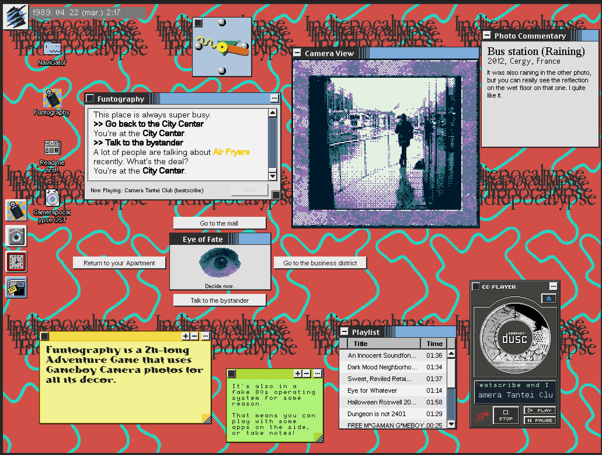

Woops, haven't written a blogpost in a few months..
I've been busy playing video games* and memeing something up with the Playdate.
But in the meantime, my silly gameboy camera VN has made it into Indiepocalypse Issue 65!
Indiepocalypse is a curated monthly collection looking to highlight the very best of the alternative indie game scene.
Please give it a look, it's not even the only game in there with an operating system interface!
I've remade a build of Funtography that includes a few QoL changes from the (slowly) ongoing larger fake OS project, so if you haven't played it yet, dare I say... there's never been a better time??

I wrote a few extra words about the game for the included zine, feel free to read them below if you want some more Funtolore™️:
Hey! I hope you're enjoying the zine. People often wonder what the hell the fake OS has to do with Funtography as a game and the reality of it is.... nothing!
I've been building this fake OS with super shaky foundations in Unity 2019 for 5 years by now to try and make a 80's BBS simulator game ala Digital, and Funtography is "just" a full playable game that I've built within that framework.
The concept of "VN adventure game with Gameboy Camera pictures" was stuck in my head for nearly 15 years, so at some point I just thought fuck it, let's do it in here! It was quite cathartic to actually get this out in 2023.
The story is pretty fun to look back at; It's silly and the ending is very rushed, but I enjoy writing alt-history stuff like this that grounds itself in real events and kinda just runs with it.
I'm actually still proud of the soundtrack for this - It's a hodgepodge of slowed-down chiptune horrors, but for someone who has negative music skills, I still think it's pretty good... I hope you'll be interested enough to read up to when "special stage" plays as the BGM.
In case the full fake OS game never comes out, at least this VN is something that actually shipped I can look back on. It's been hard to make time for gamedev recently, but I'm keeping at it! This dumb idea will probably kill me at some point if I don't actually get it out.
This Indiepocalypse build has a few QOL updates from the old Itch version I've made since 2023, namely actualy functional UI scaling, a very dodgy scanline filter, and a 2X zoom option for the Camera view.
If you clear the game, you'll unlock the sound test in the CD Player program!
* I haven't made a mini-review post in a hot minute but I enjoyed the hell out of "Get in the Car, Loser!" after finally playing it a month ago. also yeah deltarune ch3/4 i guess